A personal exhibition made with My Guggenheim. Make your own
An Existential Rehang
Nothing Holds Still
The photographers of the early twenty-first century carried their cameras everywhere and pointed them, most of the time, at nothing in particular: a carpet, a case, a moth on a wall. This exhibition takes them at their word. It proposes that nothing in particular is exactly where a life is lived, and that a camera roll is less a record of what happened than evidence that someone was there to notice it.
Between December 2025 and September 2026, the artist crossed the Pacific, from Los Angeles to Sydney, and on to Bali and Vanuatu, and the pictures crossed with them. Yet the subject of the work is not travel. It is waiting, packing, checking, looking down and looking up. It is a dog that will not hold still and a koala that will not wake up. It is the long middle of things, where most of any year takes place.
The work stands in a tradition of art that sits with uncertainty instead of resolving it: Mark Rothko's dark late paintings, Edward Hopper's rooms in which someone waits for something that does not arrive, the date paintings of On Kawara, which say only that a day happened. Albert Camus wrote that the absurd is born of the meeting between our need for meaning and the silence of the world. This rehang does not try to break that silence. It suggests that a photograph is one of the ways we keep each other company inside it. The museum is aware that this is a great deal to ask of a picture of a carpet.
Drawn from the artist's camera roll, Nothing Holds Still explores a year in which the artist kept choosing, again and again, to notice. It does not say what any of it means. It suggests only that the noticing was not nothing.
Gallery 1 · December 2025
Before Leaving
The first room holds the last weeks in Los Angeles. Nothing dramatic happens in it. A dog searches a bed, a carpet is looked at, a case is packed. This is how most departures look from the inside: not like an ending, but like a series of ordinary evenings in which something is quietly being decided. Look for the closed things in this room, and for the one figure who is searching.
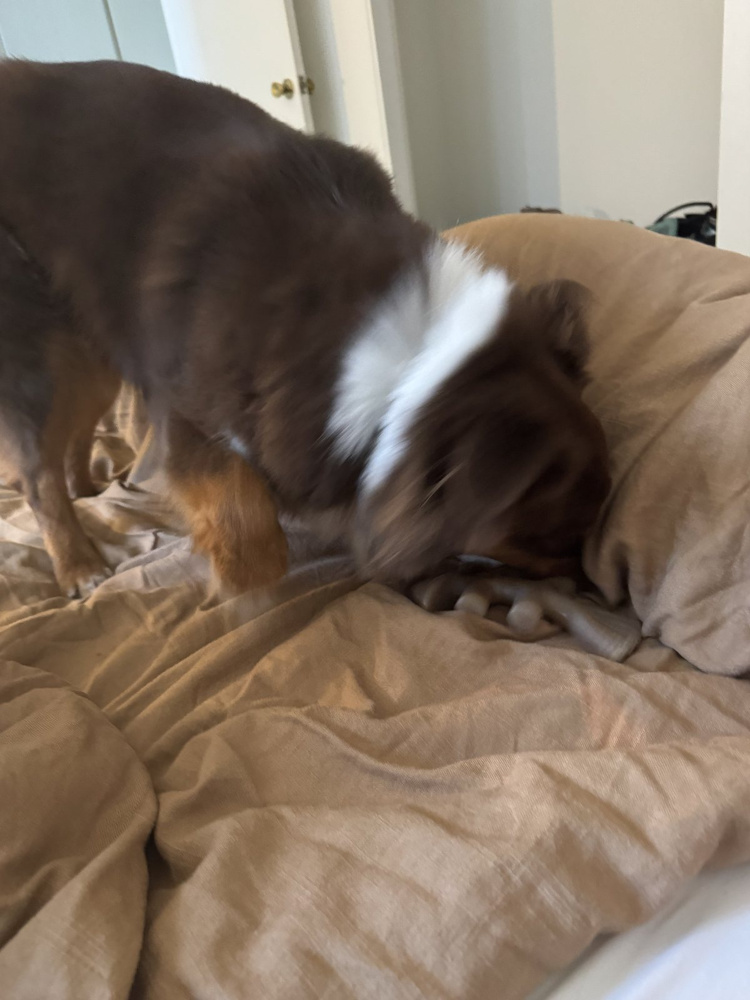
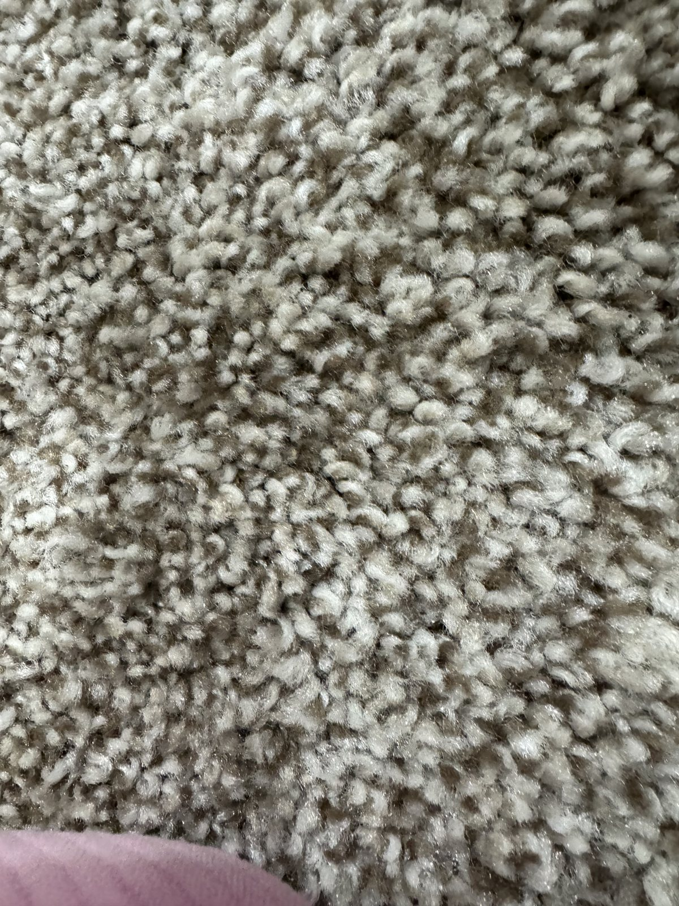
Gallery 2 · January to February 2026
Arrival
On the other side of the Pacific, it is summer. The works in this room were made in the first weeks of a new life, and they are full of thresholds: a dessert held up before it melts, two shapes on a wall that have not decided what they are, a bicycle about to go somewhere, and a koala that has opted out of the whole question. Look at how often the artist photographs the moment just before.
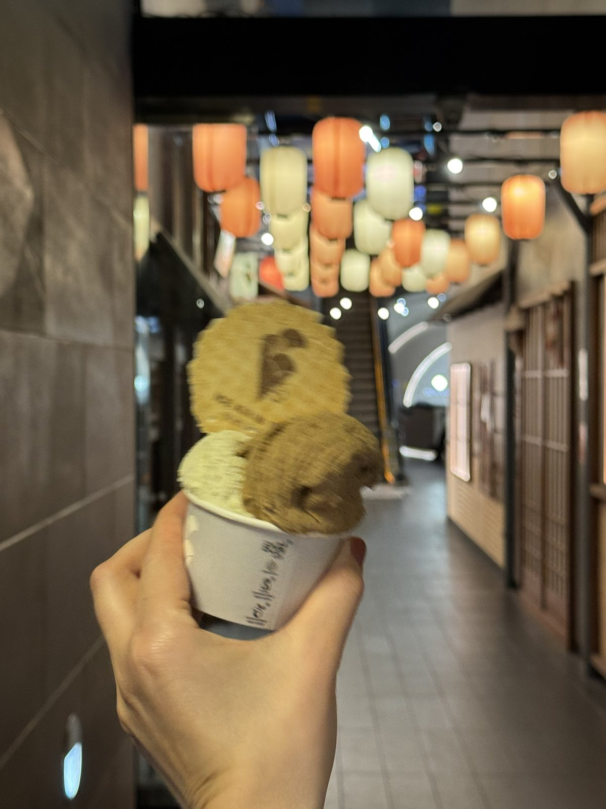
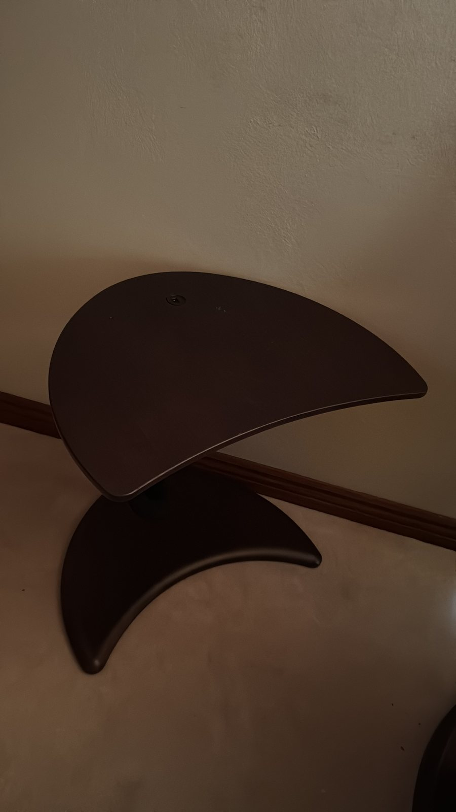
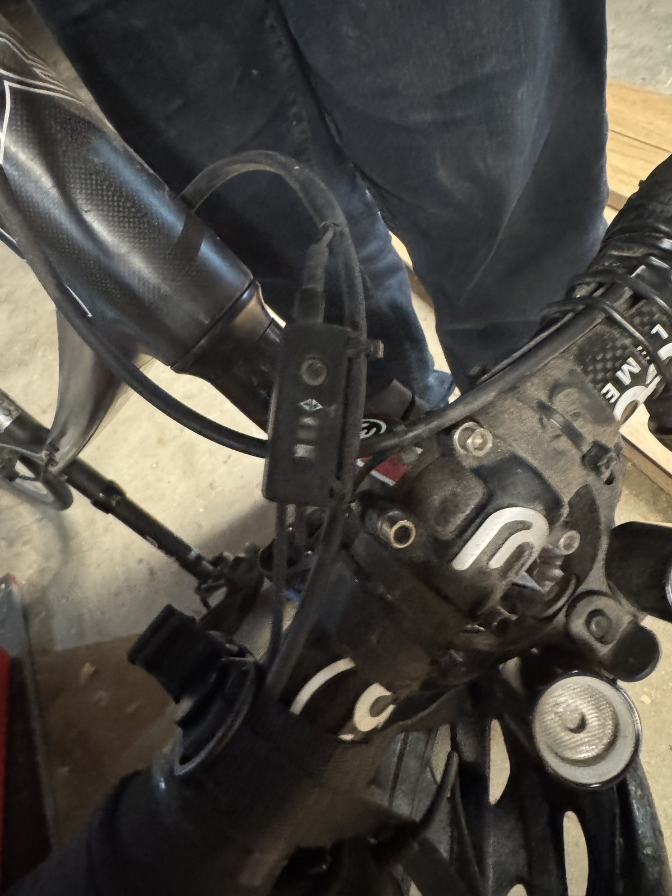
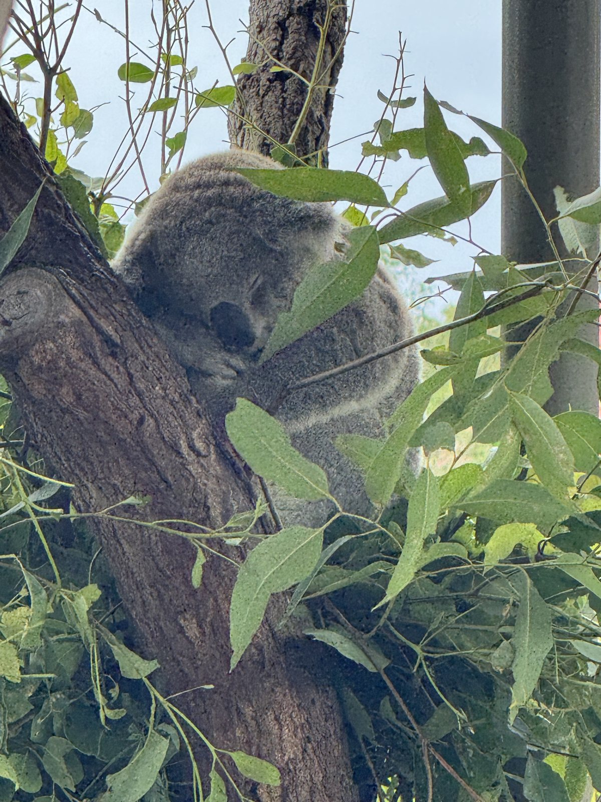
Gallery 3 · March 5, 2026
Five Hours
This room covers a single afternoon in Bali, between 1:15 and 6:22. In five hours the artist moved from power lines and an empty lot to a corner covered in other people's names, and finally to a temple wall as the light went. Read the room in order. It is a small life in itself: noise, emptiness, the wish to leave a mark, and then something older that asks for silence.
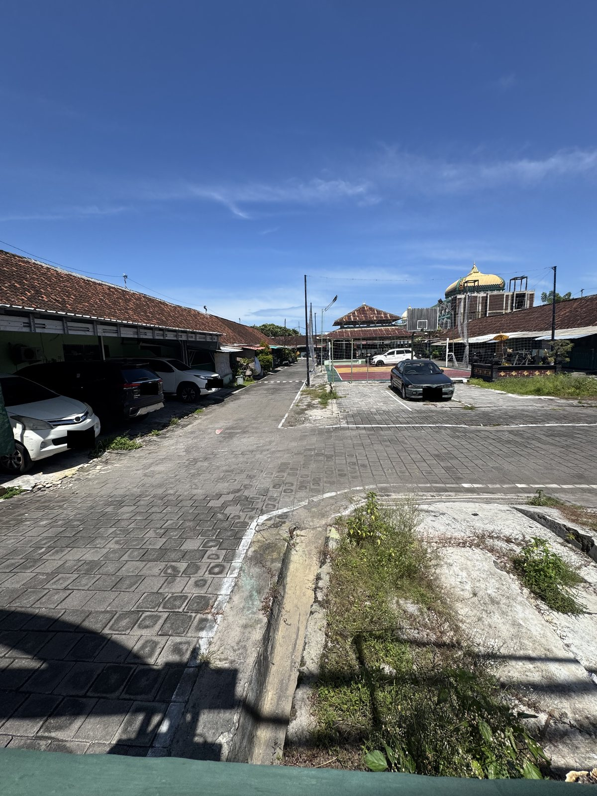
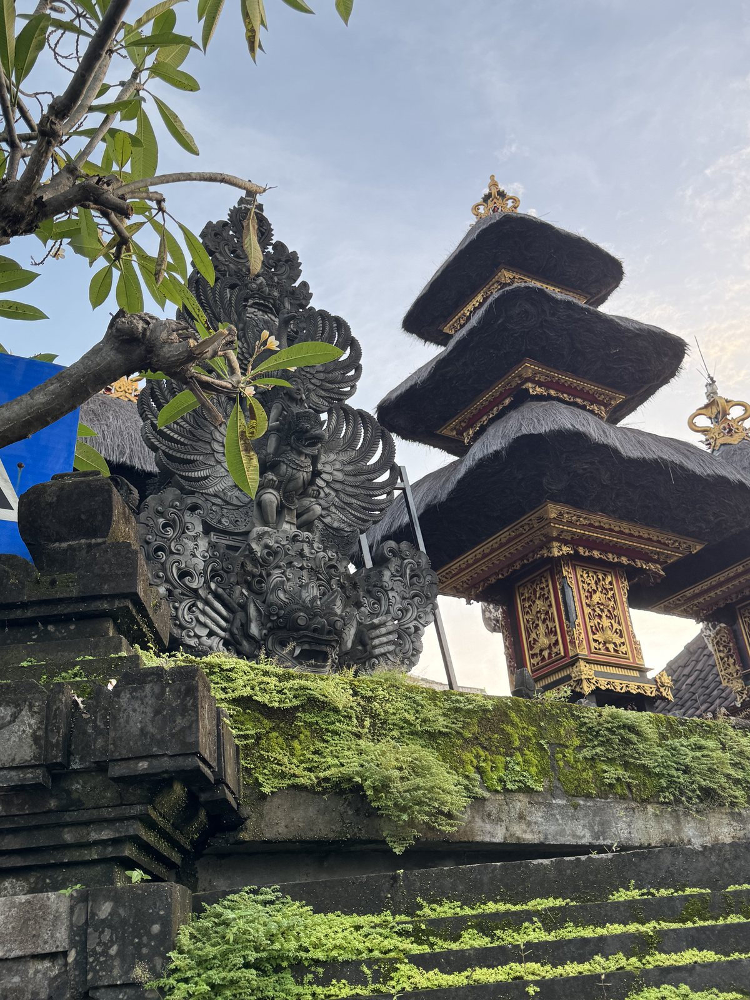
Gallery 4 · April to June 2026
The Waiting Months
Between journeys, the artist photographed a crate being filled for the next departure. This is the room of preparation, the long middle where most of any year is spent. Look at what has been chosen, and at what was left out.
Gallery 5 · July 15, 2026
One Day in July
Two pictures from the same day in Vanuatu, five hours apart. The first is the most familiar image in the exhibition: palms, water, a low sun. The second is the least: a moth on a wall in the dark. Stand between them and decide which one the day was really about. The museum has its suspicions.
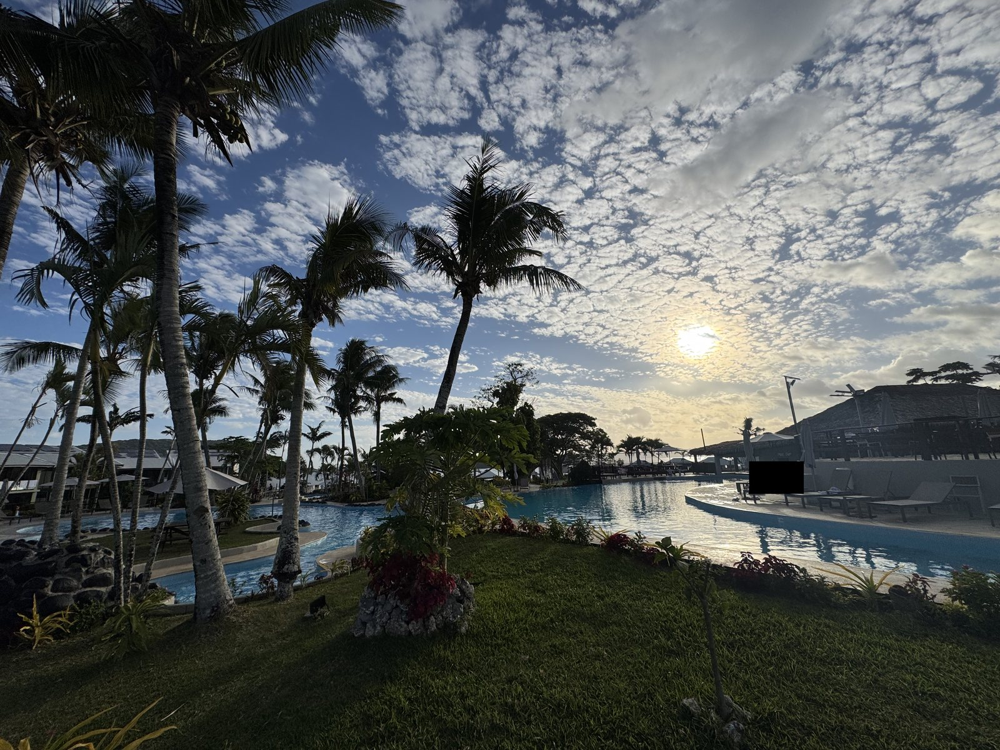
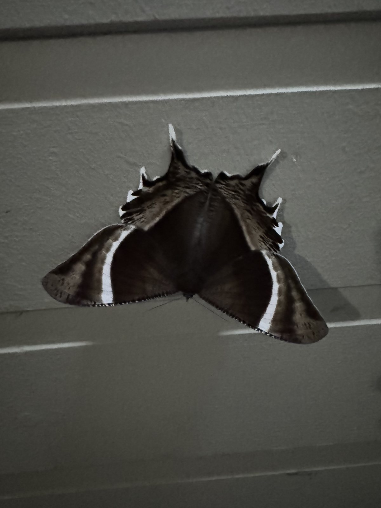
Gallery 6 · September 1, 2026
Above
The final room holds a single work: the coast, seen from a small plane on the first morning of spring. After a year spent looking down at floors and crates and carpets, the artist looks down at everything at once. It does not answer anything. It is simply very large, and very blue, and seen through glass.
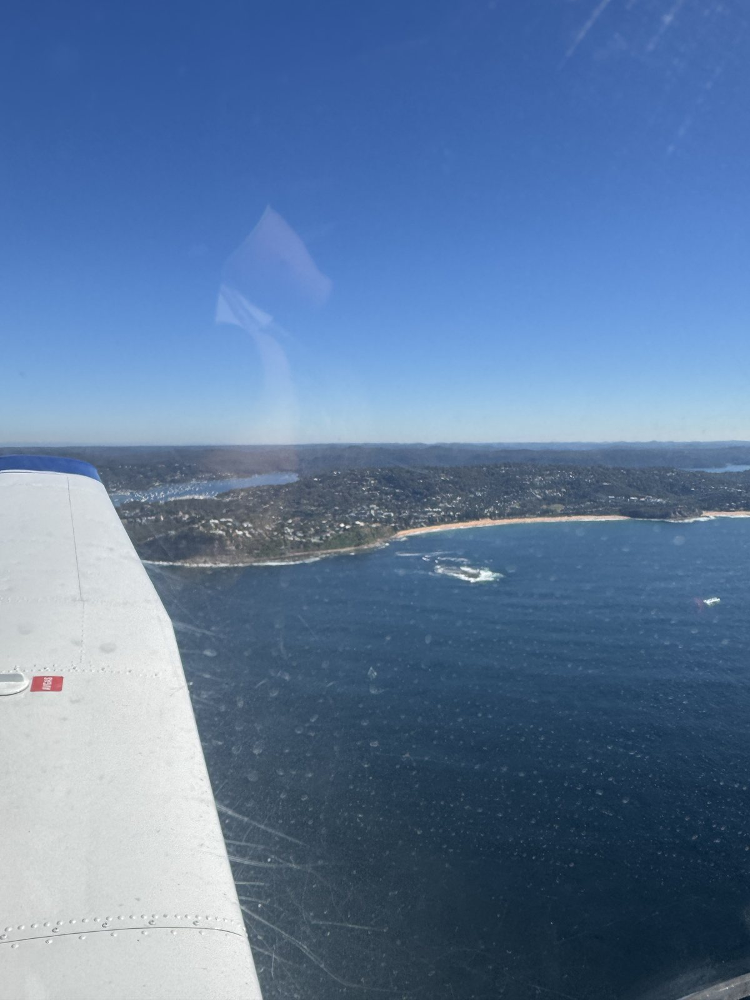
Chronology
The Artist's Life
-
December 2025
Before Leaving
A dog, a floor, a case.
-
January to February 2026
Arrival
A new hemisphere. Something sweet, something undecided, a brake, a sleeper.
-
March 5, 2026
Five Hours
One afternoon. Four pictures. Wires, an empty lot, a tagged box, a temple at dusk.
-
April to June 2026
The Waiting Months
A crate of chosen things.
-
July 15, 2026
One Day in July
Paradise at four. A moth at nine.
-
September 1, 2026
Above
The first morning of spring, seen from the air.